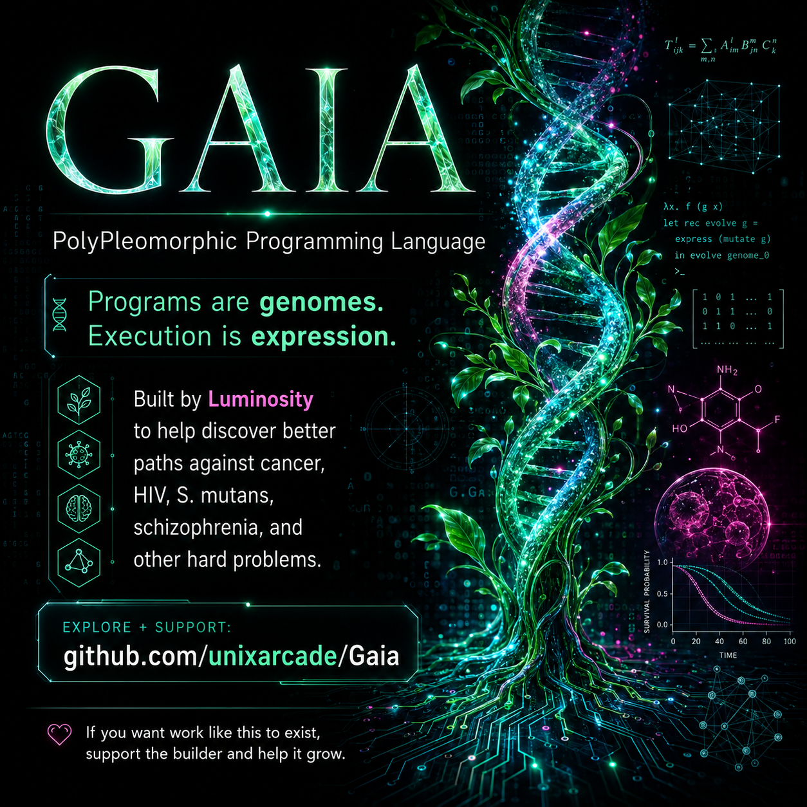

Built to explore problems that evolve, hide state, couple across scales, resist interventions, or refuse to fit inside one tidy model.
GAIA lets executable genomes live beside ordinary machine and scientific values. A program can have ancestry, mutation, recombination, phenotype and context-dependent expression without giving up pointers, tensors, numerical models or firmware.
dna ancestor = family(137,53); dna partner = family(11,53); dna child = breed(ancestor,partner,600,5300); f64 signal = fdiv(itof64(gene(child,448)),65535.0); tensor data = tensor1(4); tset(data,0,0.12); tset(data,1,0.31); tset(data,2,0.57); tset(data,3,signal); printf64(tmean(data));
The goal is not to recreate every scientific framework. It is to provide a compact set of primitives that can participate directly in GAIA's evolutionary and discovery machinery.
Decimal/scientific literals, conversions, arithmetic, comparisons, square root and printing.
Contiguous f64 storage, dimensions, indexing, reductions, fill and AXPY.
Dual-number differentiation with real product and quotient rules.
Weighted posterior sampling, posterior means and deterministic-seeded Metropolis-Hastings steps.
Euler + RK4 linear ODE, stability-checked 1-D heat diffusion, deterministic Euler-Maruyama.
Numeric scientific tables from memory, host files or the UEFI boot volume.
A real dynamically loaded OpenCL fp64 AXPY reference backend with identical CPU semantics when no compatible GPU is exposed.
GAIA can represent insufficient knowledge without converting it into zero, false or false confidence—and can turn failed predictions into explicit evidence.
The first full research programs are not treatment prescriptions. They are executable models designed to make hypotheses explicit, falsifiable, replaceable with measured data, and reproducible.
01_onco_adaptive_evolution.gaia PASS // native + ASAN + UBSAN 02_solid_tumor_microenvironment.gaia PASS // native + ASAN + UBSAN 03_hiv_reservoir_strategy.gaia PASS // native + ASAN + UBSAN 04_streptococcus_mutans_ecology.gaia PASS // native + ASAN + UBSAN 05_schizophrenia_precision_hypotheses.gaia PASS // native + ASAN + UBSAN
Software can build models, search spaces, rank hypotheses and preserve evidence. It cannot manufacture unlimited compute, sequencing, assays, organoids, curated datasets, clinical collaborators or wet-lab replication out of thin air.
If you think someone should find out how far this can go, please do not only watch from the sidelines. Fund an experiment. Offer compute. Contribute a dataset. Review a model. Open a laboratory door. Sponsor the work.
Open-source research does not become free because the source is public. If useful work is being produced with almost no resources, the next rational experiment is to give it some.
The scientific layer sits on a Dream-derived systems core. When the abstraction stops helping, GAIA still has an escape ladder toward the machine.
u8/u16/u32/u64/i64, pointers, alloc/free, peek/poke, native API gates, inline x86-64, flat binary and COFF.
The compact compiler/VM and scientific machinery can be built into a freestanding x86-64 UEFI application.
The target changes while you solve it.
Important state cannot be directly observed.
Changing X changes Y, which changes Z, which changes X.
The system finds escape routes or adapts to pressure.
You need a solution that works across a family, not one specimen.
You do not yet know what the important variables even are.